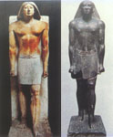
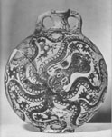
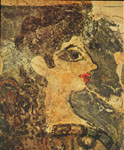
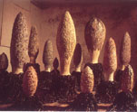

海洋文化的藝術表現
呂清夫
l
從藝術地理學看海洋文化
殊途可以同歸，條條大路可以通羅馬，人生如果能有很多選擇，堪稱不亦快
哉，而海洋民族的樂天性往往就來自他們的生活具有多種的可能性。
過去為研究藝術而劃分時代的例子時有所見，這可能有它的方便性，因為隨著時間長流來劃分藝術狀態 乃是美術史的常態，其方便可想而知，但是更重要的應如W. Morris所說，各個大時代應各有其風格，譬如南北朝與唐代的佛像 即有相當大的差異，前者瘦削後者福態，又如漢朝與唐代對於美女的審美標準亦有很大的不同，故有燕瘦環肥的說法。

研究藝術的角度可以有很多種，藝術地理學便是其中之一。例如地中海地區由於能見度良好，可以極目千
里，所以希臘美術會出現清晰的造形與寫實的描寫。中國南方由於霧氣較大，常見山在虛無飄渺間，所以南宗繪畫會出現飄渺的造形與寫意的表現。又如歐洲北部的
建築窗子都很大，因為這樣才能獲得更多的陽光，南歐的建築則窗子小很多，以減少日曬的熱度，連牆壁都常選用白色，以便將日照反射回去，所以地理條件往往決
定了造形的走向。
l
海洋文化古今談
從另一個角度看，不僅埃及以農立國，古代東方內陸亦然，這時他們不但生活上安土重遷，文化上亦具
有強烈的保守傳統主義。相對的，海洋國家則不然，不但生活上富於變化，文化上亦富於自由開放的性格。例如近代的日本由於海上之便，偶然在北太平洋碰到美國
搜索鯨魚等海洋動物的鐵殼船，不料卻給日本帶來了巨大的文化衝擊與覺
醒，進而促成了明治維新，並使日本迅速地轉型為現代化國家，封閉的幕府文化立被轉換成科學務實及積極進取的海洋文化，時當公元1853年。
古代的克里特島亦因四面環海，位居地中海交通的要衝，故  
至於他們的宮殿建築則為多層的雄壯結構，牆壁厚達40cm，
牆面畫滿了動、植、礦物的壁畫。不僅如此，他們更有完備的下水道工事、廁所亦使用沖水馬桶，比後來的希臘人更進步。其著名的諾薩斯宮因為結構複雜又被稱為
「迷宮」，其中不但壁畫表現明朗舒暢的自然風貌（左圖），完全異乎埃及、巴比倫的威權莊重表現，同時到處都設有採光與通風的廣場。
在公元前1750年，由於埃及一度淪入外族的統治，克里
特一時頓失商機，但是富生命力的克里特人仍能在小亞細亞找到新的市場，並使克里特文化經由小亞細亞傳入古希臘本土。克里特的例子可以說表現了海洋民族的特 質，其中包括(1)
自由、(2) 開放、(3) 生命力等特色。
l
台灣史上的海洋時期
這些特色也可能出現於台灣的環境中，而島嶼的海洋文化也可能與大陸的傳統文化大不相同。因為台灣
位居太平洋交通的要衝，在1624年荷蘭佔
據台灣時，便以台灣做為輸出、補給的中繼站。台灣第一次出現於在世界舞臺時，即以鹿皮、蔗糖、茶葉揚名於國際。 換言之台灣
係以貿易起家，貿易靠船隻，船隻靠海洋。即使到現代，台灣還是靠貿易創造台灣的經濟奇蹟。
不過，經濟奇蹟未必跟隨著文化奇蹟，古代的腓尼基人便是一個實例，他們雖是古代西方的經濟動物，同時也在古代創造了經濟奇蹟，但是由於不曾
注意文化的發展，以致文化上毫無建樹，直到今天大家幾乎忘了這個民族的存在。就克里特人而言，他們雖然經濟、文化並重，但又因為疏於國防，整個島上連一個城寨都沒有，因之，最後終被後起的錫尼人所滅亡，至其鼎盛的文化也僅持續了大約一
千六百年，其後幾乎再也看不到那樣精彩的文化。
就台灣而言，雖有學者提出如下的海洋、陸封分期，但在1624年以前的台灣，由於現存史料不多，無法做過多的
論述。如果能像馬雅人那樣，史蹟史料都很充足，那麼，我們可能後來的移民文化甚至都沒有馬雅文化來得特殊。在下列的各個海洋時期未必能保證帶來精彩的海洋文化，因為台灣史上過客更迭，戰事頻仍，幾乎沒有發
展文化的餘裕。如果依照克里特的前例看來，一旦政權淪亡，文化也就脣亡齒寒了。
1624年以前：海洋時期，原住民文化。
1624~1662：海洋時期，荷蘭文化。
1626~1642：海洋時期，西班牙文化。
1662~1683：海洋時期，明鄭文化。
1683~1860：封禁時期，滿清文化。
1860~1945：海洋時期，中、日文化。
1945~1987：封禁時期，中、美文化。
1987~至今：海洋時期，自由、開放。
l
台灣的海洋時期未必有海洋文化
台灣先有原住民，漢人是移民，但民族性也似乎逐漸脫胎換骨。其中滿清統治雖持續至1895年，但是鴉片戰爭則迫使清廷在1860年以後，先後開放台灣的淡水、基隆、安平、打狗諸港，並允許宣教師來台傳教，因
之，可以列入海洋時期。至於甲午戰爭之後，又在1895年把台灣割讓給日本。
當初漢人移民台灣類似英國人移民北美，開始時都為了生活而有些不得已，但是等到落地生根，應該可
以慢慢發展出一種新的文化，但它的前提應是對於土地的認同，而不是純粹的殖民，前者源於自主政權，後者屬於外來政權。美國的文化屬於前者，台灣的情況則相 當複雜。
如以日據時代的台灣藝術表現而言，台灣雖然也出過不少藝術家，但是一般而言，他們都有可能被列入日本文化。主要原因是處在殖民地時代，藝術家通常都有一個欲
求，亦即積極想在日本的官展中出人頭地，因之，大部分的藝術家都朝著這個目標前進，至其創作自然受限於官展的框框，難以開大步走大路。至於官展的框框本身
自然是日本文化的諸多層面之一而已，然對於單一框框的從一而終則帶有高度的侷限性，也異乎海洋民族自由開放的性格，當初克里特人如果僅對於任一列強文化一
面倒，就不可能開創嶄新的文化。
台灣光復以後、退出聯合國之前，藝壇一般而言是抽 象當家（左圖，廖繼春作），常被提及的
東方畫會、五月畫會都是這個傾向。這可能有兩個原因，一個是國際潮流所趨，順勢運行可能較為安心。另一個原因可能是戒嚴體制使人不想碰觸現實，抽象於是成
了避風港，但是整個局勢都有點像日據時代那樣身不由己。
台灣退出聯合國以後，開始對美、日等國懷著不滿，至於他們的現代文化也遭到池魚之殃或排斥之列。
於是文化界開始尋找認同，一時出現了所謂的鄉土運動，這時以寫實代抽象，以本土代西方的口號乃應運而生。等到反對黨正式成立以後，由於他們主張台灣主體
性，藝壇有些人也跟著喊起台灣自主性，不過反對黨意指的是相對於中國大陸而言的台灣主體性，反之，藝壇意指的是相對於西方現代主義而言的台灣主體性，在某
種程度上言，這一來反而跟中國大陸走得更近，因為大陸本來就在反對現代主義。自然，跟政治起舞的還不僅這些，如南北平衡啦、二二八平反啦，也都在藝壇討論
過，這時的台灣藝壇可以說是很政治的，只是藝壇本身還是欠缺最重要的自主性。
l
千呼萬喚出來的海洋文化

大家可以赤裸裸呈現純粹「唯物」的材質，也可以隔靴搔癢地表現第二自然（意象）。可以把整個環境當作畫布或台座來創作，也可以用肢體語言本身當作畫筆或畫布，因為生活即藝術，藝術即生活，只要你喜歡，什麼都可以，
於是科技生活、消費習慣也都可已變成藝術（右圖，王俊傑作）。不僅如此，
台灣的藝術已經正式地打進威尼斯雙年展等國際性的舞台，各國的藝術在台灣的展出也顯得近悅遠來。
這種自由、開放恐怕才是海洋民族創造亮麗文化的起點，但也是千呼萬喚始出來，所以在台灣的漢人四
百年史中，不但政治上出現了漢人四千年來第一個民選總統，文化上也跟著顯示了海洋民族的生命力。
二十多年前，當鄉土藝 術深具排他性的時期，哥倫比亞大學教授夏碧落曾說︰「藝術的自由與開放對於經濟、政治及社會邁向自由與進步有其根本的益處。」這是對於寡頭文化的當頭一 棒，也是對於海洋文化的最高禮讚。
參考文獻
http://www.fg.tp.edu.tw/~nancy/A1.htm
http://www.taiwanantarctic.org/forewords/expocultr.htm
http://cmp.nkhc.edu.tw/homepage/teacher/t0015/history/h4.htm
http://www.oceantaiwan.com/foot/index.html
http://www.ncltb.edu.tw/hem17.htm